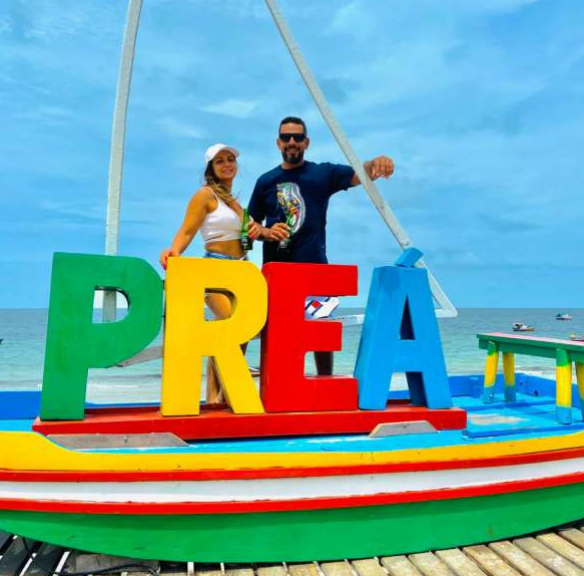
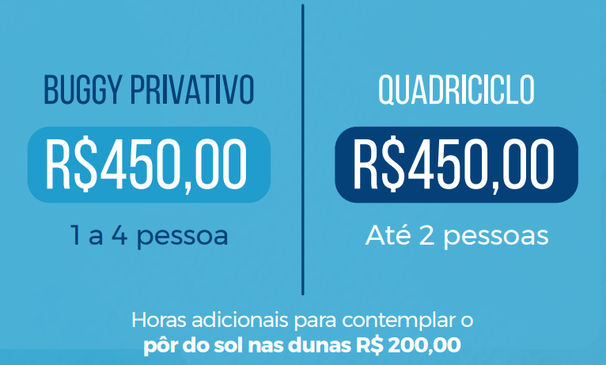

A Árvore da Preguiça é uma espécie de
Mangue de Botão que cresceu curvada
por conta dos ventos fortes da nossa região.
No nosso passeio nós fazemos apenas uma
pequena parada para fotos e depois seguimos
para a próxima atração.
Praia do Preá

A praia do Preá é uma comunidade localizada
no municipio de Cruz, vizinho a Jeri. É
uma das praias mais extensas do litoral
Cearense, tem ventos fortes para quem deseja
aprender ou praticar Kitesurf e uma saborosa
gastronomia típica do Ceará
Buraco Azul
O Buraco Azul com seu tom de azul turquesa
está localizado em Caiçara, tem
aproximadamente 6 metros de profundidade,
com estrutura de restaurante e se tornou a nova
atraçãopara quem visita Jeri.
É cobrado uma taxa de
R$10,00 por pessoa para entrar.
Lagoa Azul
A lagoa azul é uma das atrações tradicionais
do nossa região. Com um estrutura rústica.
Lá voce tambem escontra as famosas redes
coloridas, espreguiçadeiras e trampolins de
madeira. Para chegar até a barraca é necessaio
fazer a travessia de jangada que é cobrado
o valor de R$ 20,00 por pessoa.
Lagoa Paraíso
A lagoa do paraíso é um dos cartões postais
mais procurados de Jeri, com areia fina e águas
cristalinas em diferentes tons de verde e azul.
Há diversas barracas na orla e a Alchymist Beach
Club é a que dispõe de uma estrutura completa
com bar, restaurante e uma area VIP.
É cobrado uma taxa de R$ 25,00 para entrar.
Lagoa do Amâncio
A lagoa do Amâncio é uma das lagoas
paradisíacas formada apenas por águas
de chuva e cercada por dunas de
areia branca no Parque Nacional de Jeri,
se tornando uma parada obrigatória.
Lagun Beach (Praia do Preá)
Lagun beach Localizado a 1 km da praia do Preá e
a 12 km da vila de Jericoacoara e a mais nova
sensação da região. Além do bar e restaurante de
alta qualidade ainda conta com cenários
perfeitos para fotos incríveis.
Tabela de Preços
Praia do Preá
A praia do Preá é uma comunidade localizada
no municipio de Cruz, vizinho a Jeri. É
uma das praias mais extensas do litoral
Cearense, tem ventos fortes para quem deseja
aprender ou praticar Kitesurf e uma saborosa
gastronomia típica do Ceará.
Munzuá Pier Club
O mais charmoso Pier club da lagoa do lagamar,
barrinha - ce localizado a 23 km da vila de Jericoacoara
lá além de um píer club ele também oferecem passeios
de lanchas, pedalinhos, stand up, jet sky e helicópteros
e também oferece um espaço com piscina e um palco
com Dj e música ao vivo todos os dias.
Restaurante Komakí
Nosso restaurante esta localizado em uma vila de
pescadores que parte dela foi soterrado por dunas móveis,
no município de Acaraú/Ce a 20 km ao leste da vila de
Jericoacoara. Trabalhamos com com frutos do mar frescos,
ótima qualidade de serviço e sempre de braços abertos para
receber nossos clientes. O restaurante Komaki possui linda
vista para o mar e boa infraestrutura com espreguiçadeiras
e chuveiro de água doce para relaxar.
Dunas de Barrinha
As dunas de barrinha tem sido um ponto
muito procurado nos últimos tempos.
Além do cenário perfeito da combinação
entre dunas e coqueiros, tem uma vista
privilegiada da praia e um por do
sol deslumbrante.
Tabela de Preços

Barra do Guriú
Guriú é um destrito de Camocim que
fica a cerca de 10 km de Jericoacoara.
Possui uma larga faixa de área branca
e é cercada por coqueiras. É
necessário fazer travessia de balsa
pelo rio para chegar até a vila.
Cavalo Marinho
Na praia de Mangue Seco é possível
fazer o passeio ecológico do cavalo marinho.
O passeio é feito em um barco de madeira
pelo rio guriú, o barqueiro também conta
um pouco da história da região. É cobrado
R$20,00 por pessoa, o passeio dura em torno
de 20 minutos. Obs. O passeio é opcional.
Mangue Morto
O mangue morto em guriú é uma das principais
atrações do litoral oeste. O que mais chama a
atenção é a quantidade de árvores com raizes
longas para fora da terra. No mangue é
possível encontrar várias redes coloridas,
balanços e até casa na árvore.
Toboágua e Tirolesa
É no passeio do Litoral Oeste que
encontramos os famosos toboáguas
e tirolesa. Se você é daqueles que
curte um pouco de adrenalina não
pode ficar de fora dessa.
É cobrado R$ 20,00 por pessoa e
pode descer até 3 vezes
Lago Grande
O Lago Grande é a nossa última parada
do passeio. Mesas com pés na água.
Atendimento impecavél e o peixe é fresco
e preparado na hora. Ideal para um
mergulho e relaxar nas suas redinhas
submersas na Água.